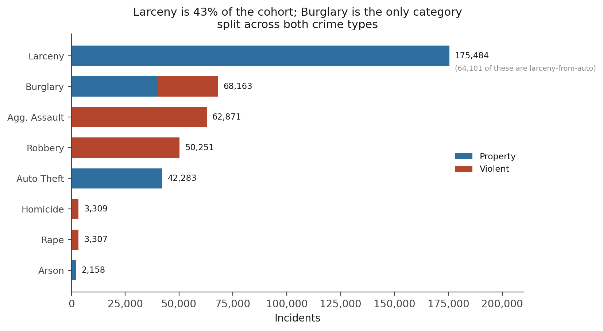
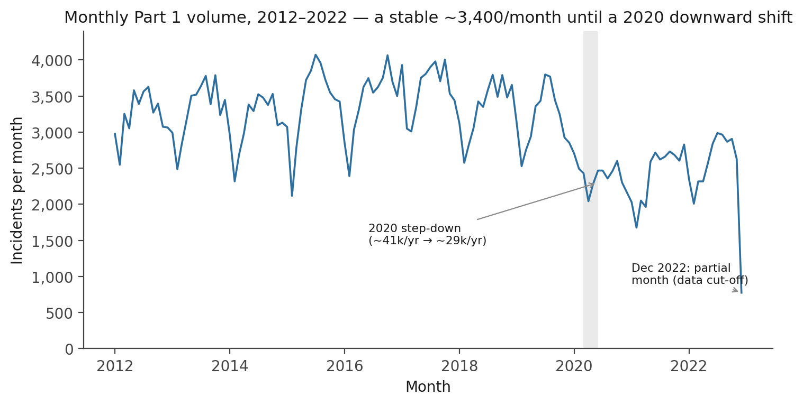
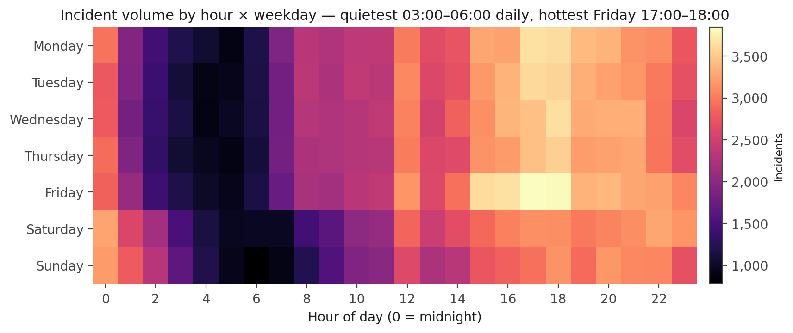
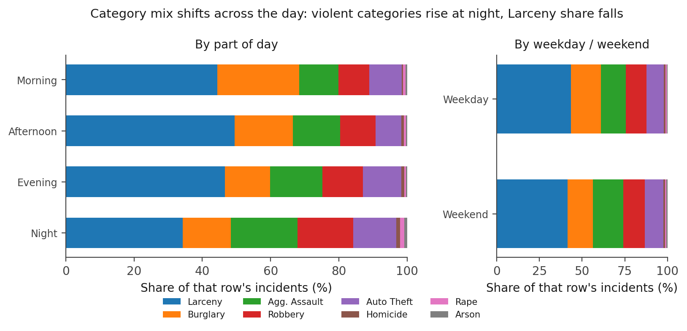
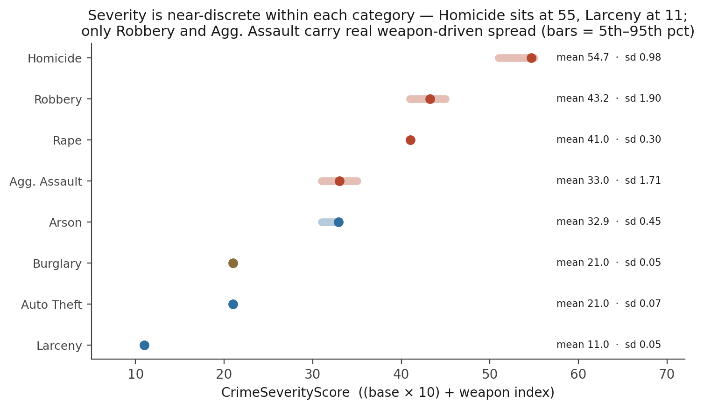
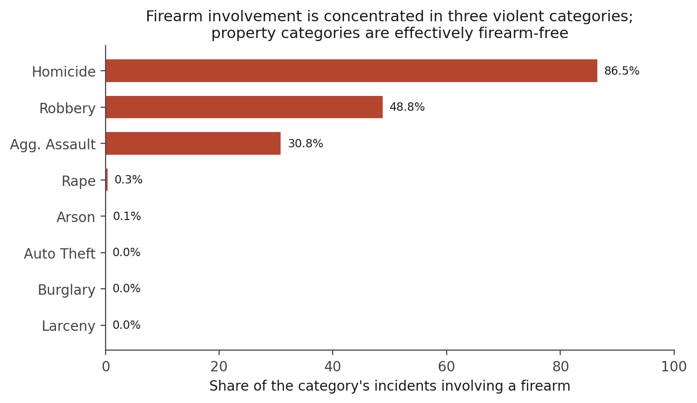
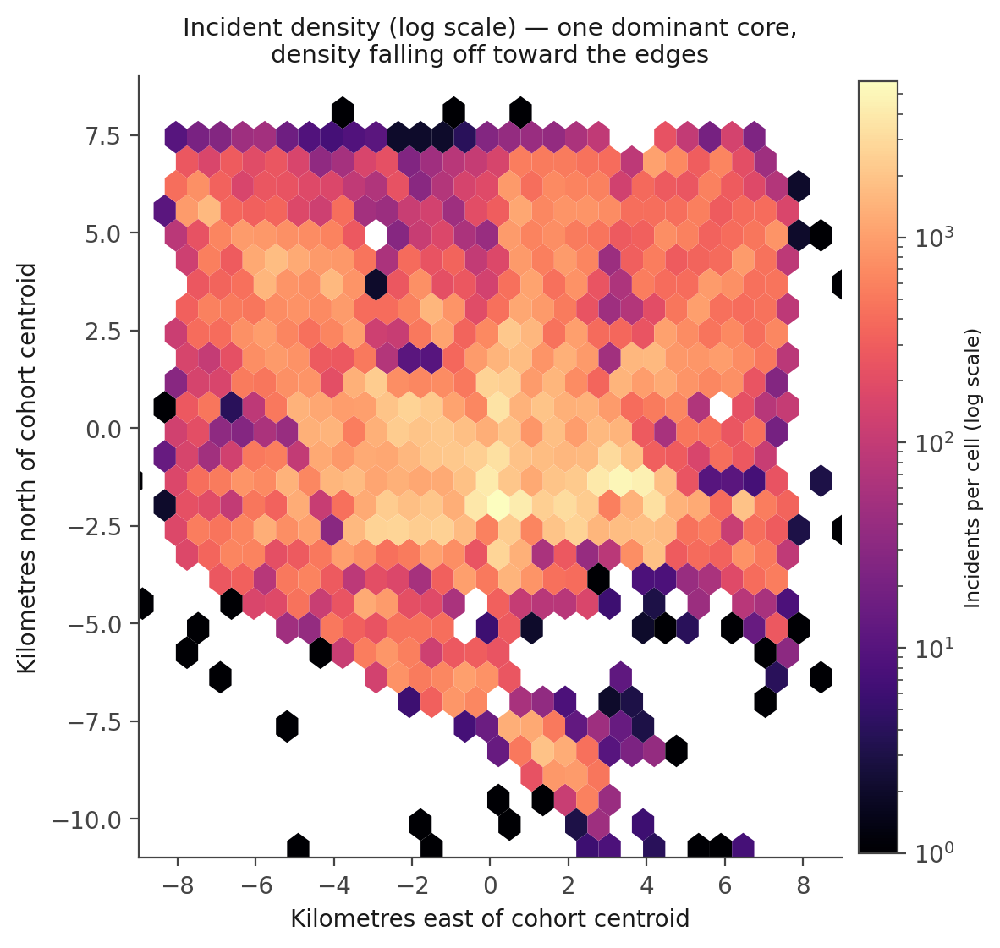
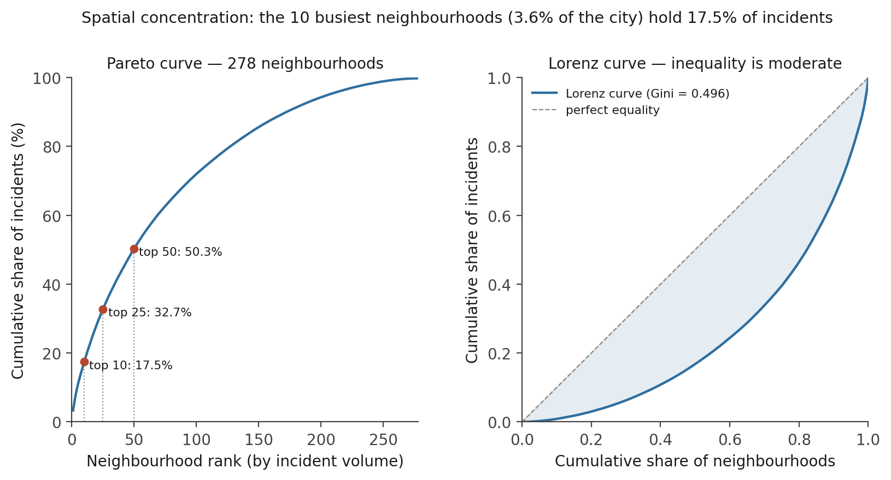
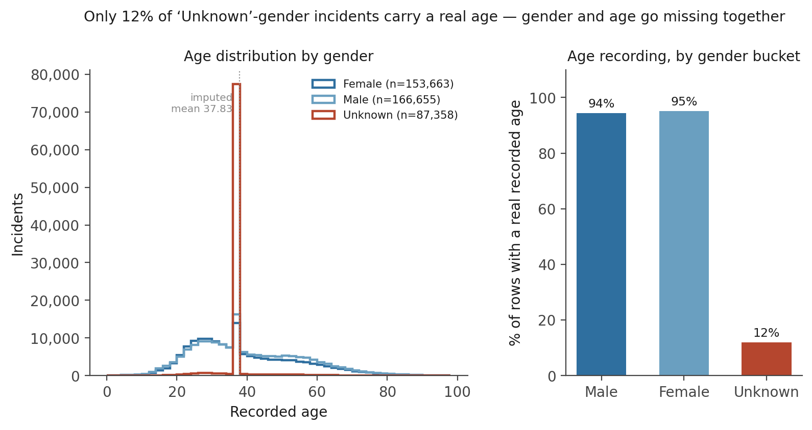

A Four-Lens Exploratory Analysis of 407,826 Urban Part 1 Crime Incidents
Profiling eleven years of a large U.S. city’s serious-crime records across volume, time, severity, and space — a moderate (Gini 0.50) rather than extreme spatial concentration, a near-discrete composite severity score, and a demographic-recording gap in which victim gender and victim age go missing together.
An exploratory read of 407,826 Part 1 (index) crime incidents, 2012–2022. Composition: 63.7% property / 36.3% violent; Larceny alone is 43% of the cohort. Concentration: the 10 busiest neighbourhoods (3.6% of the city) hold 17.5% of incidents and the top 50 hold 50.3% — but the Lorenz-curve Gini is 0.50, moderate, not the near-1.0 that a Herfindahl-style index (inflated by the 278-neighbourhood count) suggests. Severity: the engineered CrimeSeverityScore is functionally discrete within each category (per-category SD under 0.5 for five of the eight categories); only Robbery and Aggravated Assault carry real weapon-driven spread. A data-quality finding: the 87,358 incidents with no recorded victim gender also lack a recorded age 88% of the time — gender-missing and age-missing co-occur rather than arising independently.
exploratory data analysis, Part 1 crime, index crime, spatial concentration, Lorenz curve, Gini coefficient, Herfindahl index, crime severity score, temporal crime patterns, crime clock, weapon modality, firearm involvement, missing data, co-missingness, police records, descriptive statistics, Python, pandas
Abstract
This study profiles 407,826 Part 1 (index) crime incidents recorded by a large U.S. municipal police department between 2012 and 2022, drawn from an open-data portal and processed through a medallion ETL pipeline into a single analytical table. The analysis is organised around four lenses — volume, temporal pattern, severity, and spatial concentration — with every reported quantity recomputed from the source table. Property offences account for 63.7% of the cohort and violent offences 36.3%; larceny alone is 43%. Incident volume was stable at roughly 3,400 per month until a downward shift in 2020. Spatial concentration is real but moderate: the 10 busiest neighbourhoods (3.6% of the city’s 278) carry 17.5% of incidents and the top 50 carry 50.3%, yet the Lorenz-curve Gini coefficient is 0.50 — a materially different headline from the 0.99 that a Herfindahl-style diversity index returns once its dependence on the neighbourhood count is accounted for. The engineered composite severity score is near-discrete within each offence category (per-category SD under 0.5 for five of the eight categories); only robbery and aggravated assault carry meaningful weapon-driven variation, and firearm involvement is concentrated in three violent categories. A data-quality finding closes the analysis: of the 87,358 incidents with no recorded victim gender, 88% also carry no recorded victim age, indicating that the two fields go missing together in the source records rather than through independent processes.
Keywords: exploratory data analysis, Part 1 crime, spatial concentration, Lorenz curve, crime severity score, temporal crime patterns, firearm involvement, co-missingness
Introduction
Municipal open-data portals now publish incident-level crime records at a scale that supports population-level description without any survey instrument. Those records are an operational by-product of records management, not a research dataset, and their analytical value depends on reading them for what they are: a census of reported and classified incidents, with the recording gaps and definitional conventions of the agency that produced them.
This exploratory analysis takes one such extract — every Part 1 offence a large U.S. city logged over an eleven-year window — and profiles it along four lenses. Volume asks how many incidents there are and how they divide across offence category and crime type. Time asks when incidents occur, at the resolution of year, month, weekday, and hour. Severity asks how serious they are, using a composite score that combines offence category with weapon modality. Space asks how geographically concentrated they are, and whether the distribution is heavy-tailed enough to justify place-based rather than uniform resourcing. A fifth pass audits the recording gaps the four lenses have to read around.
No causal claim is made anywhere. Where a pattern invites a “because”, the analysis reports the relevant cross-tabulation and lets the reader see the differential composition directly.
Method
Data source
The data are a single extract of Part 1 (index) crime incidents — homicide, rape, robbery, aggravated assault, burglary, larceny, auto theft, and arson — reported to a large U.S. city’s police department between 1 January 2012 and 10 December 2022, obtained from the city’s municipal open-data portal and retrieved on 13 December 2022. The jurisdiction is not identified in this article; the analysis concerns method and structure, not a specific city. The raw export was processed through a four-tier medallion ETL pipeline (documented in a companion article) that resolved sentinel values, harmonised controlled vocabularies, validated coordinates against the city bounding box, and filtered to the 88-code Part 1 dimension, yielding a fully populated analytical table of 407,826 incidents and 36 columns.
Measures
Each incident carries the offence category (eight levels) and top-level crime type (Property Crime / Violent Crime); victim demographics (gender, race, ethnicity, age — all operator-recorded, with substantial and uneven missingness); a temporal decomposition of the UTC-aware timestamp (hour, minute, weekday, part-of-day, weekend and night-time flags); coordinates and three spatial descriptors (nine patrol districts, 278 named neighbourhoods, a three-state inside/outside field); and three engineered severity fields — CrimeCategoryIndex (ordinal 1–8), WeaponSeverityIndex (1–5 lethality gradient), and the composite CrimeSeverityScore = (BaseCrimeSeverity × 10) + WeaponSeverityIndex, which ranges 11–55. Victim age was mean-imputed in the pipeline (fill value 37.83); the imputation is the subject of the data-quality section. Districts are labelled D1–D9 by descending incident volume and neighbourhoods by rank only, so the analysis does not turn on the identity of any place.
Analytic approach
The analysis is descriptive throughout: counts, proportions, and cross-tabulations for the categorical structure; monthly and daily resampling with rolling windows for the temporal picture; the CrimeSeverityScore mean, standard deviation, and 5th–95th-percentile band per category for the severity lens. Spatial concentration is quantified three ways — cumulative top-N neighbourhood shares (a Pareto reading), the Lorenz-curve Gini coefficient on neighbourhood incident counts, and a Herfindahl-style Gini–Simpson diversity index (1 − Σpᵢ²) — because the three measures disagree in an instructive way. All quantities were recomputed from the analytical table; no value is read off a chart.
Software
Analysis in Python 3 with pandas and numpy; figures in matplotlib. Maps are rendered on a local kilometre grid centred on the cohort centroid, with no basemap and no absolute coordinates.
Results
Volume
The cohort is 63.7% property crime (259,660 incidents) and 36.3% violent crime (148,166) — a mix typical of U.S. Part 1 data, where acquisitive offences dominate numerically. Larceny alone is 43% of all incidents (175,484), of which 64,101 are larceny-from-auto; burglary (68,163), aggravated assault (62,871), robbery (50,251), and auto theft (42,283) follow. The three highest-severity categories are the smallest by count: homicide (3,309), rape (3,307), arson (2,158). Burglary is the only category that spans both crime types — 28,428 incidents classed violent (forcible entry to an occupied structure) against 39,735 classed property — which is a genuine split in the source’s own classification, not a join artefact (Figure 1, Table 1).
Figure 1
Incident Count by Offence Category, Split by Crime Type

Note. Burglary is the only category with mass in both the property and violent segments.
Table 1
Cohort Composition by Offence Category (n = 407,826)
| Category | Incidents | % of cohort | Crime type | Mean severity | Firearm share |
|---|---|---|---|---|---|
| Larceny | 175,484 | 43.0 | Property | 11.0 | 0.0% |
| Burglary | 68,163 | 16.7 | Property + Violent | 21.0 | 0.0% |
| Aggravated Assault | 62,871 | 15.4 | Violent | 33.0 | 30.8% |
| Robbery | 50,251 | 12.3 | Violent | 43.2 | 48.8% |
| Auto Theft | 42,283 | 10.4 | Property | 21.0 | 0.0% |
| Homicide | 3,309 | 0.8 | Violent | 54.7 | 86.5% |
| Rape | 3,307 | 0.8 | Violent | 41.0 | 0.3% |
| Arson | 2,158 | 0.5 | Property | 32.9 | 0.1% |
Note. Mean severity is the mean CrimeSeverityScore. Firearm share is the percentage of the category’s incidents whose unified weapon value is any firearm type.
The temporal picture
Monthly volume held near 3,400 incidents from 2012 through 2019, then stepped down in 2020 to roughly 2,400–2,500 and stayed there through 2022 (annual totals fall from ~41,000 to ~29,000). The final data point, December 2022, is a partial month by construction and is excluded from any trend reading (Figure 2).
Figure 2
Monthly Part 1 Incident Volume, 2012–2022

Note. Day-to-day volume is moderately variable (M = 102 incidents/day, SD = 23, CV ≈ 0.23), so trend is best read at the 30–90-day rolling window rather than on raw daily counts.
Within the day, 31.1% of incidents fall in the Night bucket (21:00–04:59), against 20.9% in the Morning bucket; the hour-by-weekday view locates the structure precisely (Figure 3). The quietest stretch is 03:00–06:00 every day; the single busiest hour-cell is Friday 17:00–18:00. The categorical mix shifts with the clock: violent categories (aggravated assault, robbery) take a larger share of night-time incidents while larceny’s share falls (Figure 4). The weekend share of incidents is 27.2%, slightly below the 28.6% a uniform 2-of-7 split would give; rape (31.2%) and aggravated assault (31.2%) are the most weekend-skewed categories, burglary the least (24.0%) (Table 2).
Figure 3
Incident Volume by Hour of Day and Weekday

Note. The bright midnight column reflects incidents timestamped at exactly 00:00 when only a date was known.
Figure 4
Offence-Category Mix by Part of Day and by Weekday / Weekend

Note. Each bar is normalised to 100%; the comparison is of composition, not volume.
Table 2
Temporal Distribution of Incidents
| Split | Level | Incidents | % of cohort |
|---|---|---|---|
| Part of day | Night (21:00–04:59) | 126,927 | 31.1 |
| Afternoon (12:00–16:59) | 101,932 | 25.0 | |
| Evening (17:00–20:59) | 93,830 | 23.0 | |
| Morning (05:00–11:59) | 85,137 | 20.9 | |
| Weekday | Friday (highest) | 61,479 | 15.1 |
| Sunday (lowest) | 54,206 | 13.3 | |
| Weekend flag | Saturday + Sunday | 110,757 | 27.2 |
Note. Uniform-baseline weekend share = 2/7 ≈ 28.6%; the observed 27.2% is marginally below it. Per-category weekend share ranges from rape (31.2%) down to burglary (24.0%).
Severity
The cohort-mean CrimeSeverityScore is 21.8 (SD = 11.8), corresponding to a base severity of 2 with a weapon index at the floor — the central tendency of a cohort weighted toward acquisitive crime with little weapon information. The score is functionally discrete within each category: five of the eight categories have a per-category SD below 0.5 (rape, arson, burglary, auto theft, larceny), so a box or violin plot of the raw score mostly shows single spikes (Figure 5). Only robbery (SD = 1.9) and aggravated assault (SD = 1.7) carry real internal spread — precisely the categories where the weapon distinction moves the score.
Figure 5
Composite Severity Score by Offence Category

Note. Bars span the 5th–95th percentile. Standard deviations printed at right. The near-zero spread for five of the eight categories is a property of the score’s construction, not of the underlying incidents.
Weapon modality is dominated by the two operator-truth tokens: 69.1% of incidents carry Not Applicable (the operator’s affirmative “no weapon involved”) and a further 4.9% carry Unknown; the dimension’s coarse Other bucket adds 7.0%. Firearms (any type) are involved in 11.4% of the cohort — but that share is concentrated in three violent categories: 86.5% of homicides, 48.8% of robberies, and 30.8% of aggravated assaults, against effectively zero for every property category and for rape (0.3%) (Figure 6). Knives appear in 4.5% of incidents and personal weapons (hands, feet) in 2.3%.
Figure 6
Firearm Involvement by Offence Category

Note. “Firearm” aggregates every firearm value in the unified weapon vocabulary (handgun, rifle, shotgun, automatic variants).
Spatial concentration
Incident density has a single dominant core and falls off smoothly toward the edges of the built area, with no secondary cluster (Figure 7). Across the 278 named neighbourhoods, the distribution is heavy-tailed but the strength of that description depends on the measure (Figure 8, Table 3). The Pareto reading is unambiguous: the 10 busiest neighbourhoods — 3.6% of all neighbourhoods — carry 17.5% of incidents (a 4.9× over-representation), the top 25 carry 32.7%, and the top 50 cross the halfway mark at 50.3%. The Lorenz-curve Gini coefficient on neighbourhood counts is 0.50 — moderate inequality, comparable to a national income distribution, not extreme. A Gini–Simpson diversity index (1 − Σpᵢ²) returns 0.99, which looks like near-perfect evenness until one notes that its ceiling for 278 units is 1 − 1/278 ≈ 0.996; the index is measuring category count as much as concentration. The Pareto shares and the Gini are the defensible headline figures; the diversity index is reported only to show why it should not be.
Figure 7
Incident Density on a Local Kilometre Grid

Note. Axes are kilometres from the cohort centroid. The city is not identified.
Figure 8
Neighbourhood-Level Concentration — Pareto and Lorenz Views

Note. Both panels exclude the small Unknown-neighbourhood arm (1,005 incidents).
Table 3
Spatial Distribution and Concentration
| Measure | Value |
|---|---|
| Patrol districts (labelled D1–D9 by volume) | D1 14.9% · D2 14.2% · D3 11.7% · D4 11.5% · D5 11.5% · D6 10.2% · D7 9.9% · D8 8.2% · D9 7.6% · Unknown 0.2% |
| Inside / Outside / Unknown | 39.0% / 46.5% / 14.5% |
Incidents at a repeat location string |
399,788 (98.0%) |
| Top-10 / top-25 / top-50 neighbourhood share | 17.5% / 32.7% / 50.3% |
| Lorenz-curve Gini (neighbourhood counts) | 0.50 |
| Gini–Simpson diversity (1 − Σpᵢ²) | 0.99 (ceiling for 278 units ≈ 0.996) |
Note. The 98.0% repeat-location share overstates true address recurrence: many incidents are logged against broad descriptors (cross-streets, block ranges) that absorb many distinct events. Inside-leaning categories are burglary (80.6% inside); outside-leaning are homicide (81.8%), auto theft (76.7%), and robbery (57.2%).
Data quality
Every Part 1-defining column (crime_type, crime_category, crime_subcategory, weapon_unified) and the harmonised inside_outside field is fully populated — the pipeline routes operator signal into explicit tokens (Unknown, Not Applicable) rather than leaving parallel NaN tracks, so column-level missingness reads as zero across the analytical set (Table 4). The substantive coverage caveats remain: ethnicity is 97.6% Unknown and cannot support any per-ethnicity analysis, and race is 29.4% Unknown.
The clearest recording-process signal is a co-missingness pattern between victim gender and victim age. Of the 87,358 incidents with gender Unknown, only 12% carry a genuine recorded age — the other 88% carry the pipeline’s imputed fill value (37.83) — against 94–95% genuine-age coverage for incidents recorded as male or female (Figure 9). The two fields do not go missing independently; the same records that lack a victim gender disproportionately lack a victim age. The most economical explanation is a single upstream gap — incidents logged without a victim interview at all — rather than two unrelated data-entry lapses, though confirming that would need record-level linkage this analysis does not have.
Figure 9
Victim Gender and Victim Age Go Missing Together

Note. The Unknown-gender age distribution collapses to the imputed mean because 88% of those rows had no age to record.
Table 4
Data-Quality Summary for the Analytical Columns
| Column group | Column-level missingness | Substantive caveat |
|---|---|---|
Offence classification (crime_type, crime_category, crime_subcategory, weapon_unified) |
0% (guaranteed by the Part 1 inner join) | none |
Spatial context (inside_outside, latitude, longitude) |
0% | Unknown inside/outside (14.5%) concentrates in acquisitive categories where the distinction is genuinely ambiguous |
| District / neighbourhood | 0% (explicit Unknown member) |
Unknown district 980 rows, Unknown neighbourhood 1,005 rows |
| Race / ethnicity | 0% (explicit Unknown token) |
ethnicity 97.6% Unknown — unusable; race 29.4% Unknown |
| Gender / age | 0% (imputed) | 87,358 incidents have Unknown gender; 88% of them also lack a real age (Figure 9) |
Note. Zero column-level missingness is a property of the operator-truth pipeline, not evidence of complete records; the substantive-caveat column is where the real coverage limits live.
Discussion
Principal findings
The cohort behaves the way major-city Part 1 data usually does at the top level: property-dominated, larceny-heavy, with a small violent tail that carries the severity. Two findings are less generic. First, spatial concentration is moderate, not extreme — the Lorenz Gini of 0.50 and the top-50 share of 50.3% describe a distribution where place-based resourcing has real leverage but is not the overwhelming story a “0.99 concentration index” would imply; the choice of inequality measure changes the headline, and the count-sensitive diversity index is the wrong one to lead with. Second, the engineered severity score is near-discrete — useful as an ordinal sort key and as a compact category proxy, but not as a continuous outcome, because within seven of the eight categories it takes essentially one value.
The interesting mechanism
The gender/age co-missingness is the finding most likely to matter for downstream modelling. An analyst who treats Unknown gender as just another category, and the imputed age as just another number, will be feeding a model 87,358 rows in which two predictors are simultaneously synthetic. The pattern also means that any demographic-stratified result on this cohort is really a result conditioned on “the victim was interviewed”, which is not a neutral selection. The safe move downstream is to carry an indicator for the co-missing rows and check model behaviour with and without them.
Limitations
The records are a census of classified and recorded incidents, not of victimisation; unreported and unclassified events are absent by construction. The IsRepeatLocation flag (98.0%) is inflated by coarse location descriptors and should not be read as an address-recurrence rate. Hour-of-day is analysed as recorded and has not been independently verified against the agency’s clock convention, so the exact night boundary carries some uncertainty. The 2020 volume shift is described, not explained. All figures are single-cohort and single-jurisdiction.
Conclusion
Across volume, time, severity, and space, the cohort is internally coherent and the pipeline’s engineered fields behave as designed. The two results worth carrying forward are that neighbourhood-level concentration is moderate rather than extreme once measured honestly, and that the demographic-recording gap is structured — victim gender and victim age are missing on the same incidents — in a way that constrains what any demographic analysis on this data can claim.
References
Ceccato, V., & Uittenbogaard, A. C. (2014). Space–time dynamics of crime in transport nodes. Annals of the Association of American Geographers, 104(1), 131–150. https://doi.org/10.1080/00045608.2013.846150
Gini, C. (1921). Measurement of inequality of incomes. The Economic Journal, 31(121), 124–126. https://doi.org/10.2307/2223319
Harris, C. R., Millman, K. J., van der Walt, S. J., Gommers, R., Virtanen, P., Cournapeau, D., Wieser, E., Taylor, J., Berg, S., Smith, N. J., Kern, R., Picus, M., Hoyer, S., van Kerkwijk, M. H., Brett, M., Haldane, A., del Río, J. F., Wiebe, M., Peterson, P., … Oliphant, T. E. (2020). Array programming with NumPy. Nature, 585, 357–362. https://doi.org/10.1038/s41586-020-2649-2
Hunter, J. D. (2007). Matplotlib: A 2D graphics environment. Computing in Science & Engineering, 9(3), 90–95. https://doi.org/10.1109/MCSE.2007.55
Simpson, E. H. (1949). Measurement of diversity. Nature, 163, 688. https://doi.org/10.1038/163688a0
The pandas development team. (2020). pandas-dev/pandas: Pandas [Computer software]. Zenodo. https://doi.org/10.5281/zenodo.3509134
Weisburd, D. (2015). The law of crime concentration and the criminology of place. Criminology, 53(2), 133–157. https://doi.org/10.1111/1745-9125.12070
Baltimore Police Department. (2022). Part 1 crime data [Data set]. Open Baltimore. Retrieved December 13, 2022, from https://data.baltimorecity.gov/
Analysis and figures by the author. A descriptive study of one agency’s recorded incidents; no quantity here supports a causal claim, and no result generalises beyond the single jurisdiction and eleven-year window analysed.